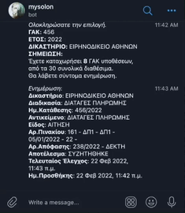

To MySolonBot σας βοηθάει
Προστέθηκε δοκιμαστικά και η δυνατότητα για έλεγχο τυχόν άσκησης
ενδίκου μέσου. Γράφετε /gak efesi και μετά
επιλέγετε την υπόθεση για την οποία θέλετε να γίνεται έλεγχος. Αν
ασκηθεί κάποιο ένδικο μέσο θα σας έρθει ειδοποιήση (ειδοποίηση
έρχεται μόνο για το πρώτο ένδικο μέσο, σε περίπτωση πχ που ασκηθούν
περισσότερες εφέσεις).
Εγκατάσταση της εφαρμογής telegram
Προστέθηκε δοκιμαστικά και η δυνατότητα για έλεγχο τυχόν άσκησης
ενδίκου μέσου. Γράφετε /gak efesi και μετά
επιλέγετε την υπόθεση για την οποία θέλετε να γίνεται έλεγχος. Αν
ασκηθεί κάποιο ένδικο μέσο θα σας έρθει ειδοποιήση (ειδοποίηση
έρχεται μόνο για το πρώτο ένδικο μέσο, σε περίπτωση πχ που ασκηθούν
περισσότερες εφέσεις).
